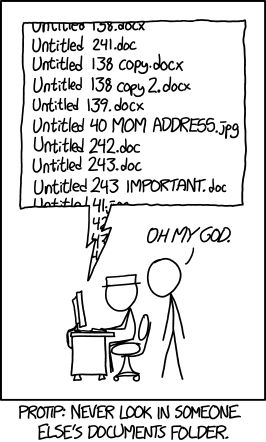
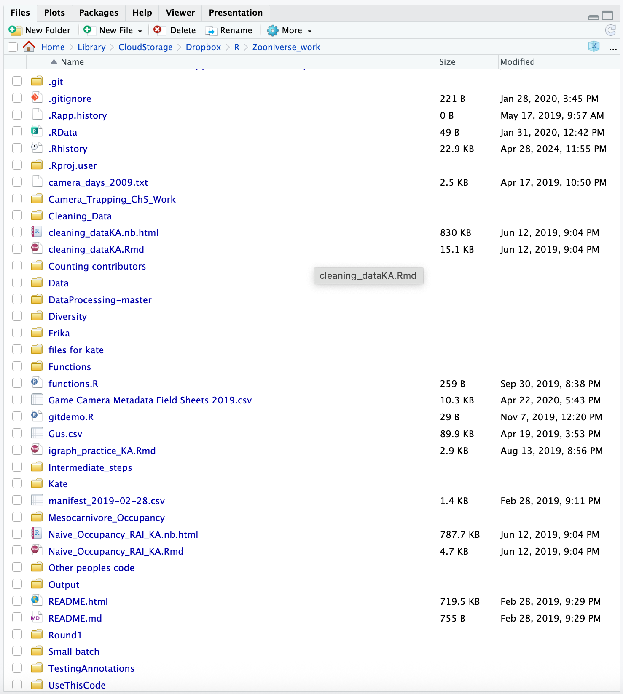

using-git-github 1
An overview of git and github
Outline
Why do we need version control?
What is git? What is github? How are they related?
Gitting started with github
Recommended workflow: start on github -> then create rstudio project
An overview of some git commands
1. Why do we need version control?
Does this seem familiar?

Here’s (one of) my embarrassing real example:

You can see from the above picture that we were using git (note the .git and .gitignore files), but I didn’t really have a good grasp of version control at that time in my life.
We can do better by using version control!
3. Gitting started with github
Before you can use git and github with your RStudio workflow, you will need to make sure that:
- git is installed on your computer (git for windows is a good choice for pc users)
- You have created an account on github
- You have checked that your RStudio can talk to your github account.
I strongly recommend checking out this website: Happy Git and GitHub for the useR which will walk you through most of the required steps and which encourages use of the usethis package which also installs a number of other helper packages.
4. Recommended workflow: start on github -> then create rstudio project
If you want to use git & github for version control and tie them to your RStudio project, things generally work most smoothly if you work in this order.
Regardless of whether you are creating a new project or cloning someone else’s project from github, the process is largely the same.
- Make sure there is a repository on github. If it is someone else’s, this step is easy. If you are creating a brand new RStudio project, then create a new repository on github and, when asked, go ahead an initialize the repository with a README file.
- Copy a clone of the repository (yours or someone else’s) from github
- Create a new RStudio project, but choose “from version control” when setting up the project. You will be asked for a url, and this is where you paste the url you copied from github.
5. Let’s try it - using git and github commands in the terminal
Using the terminal and basic bash commands
You use git from the terminal on your computer. You can access the terminal right in RStudio, but you don’t have to. Some people find the terminal intimidating at first; you may wish to use a git desktop client that works as a graphical user interface as you get started. Here is a link to the git desktop client that comes free from github.
Below I provide a guide to some terminal and git commands. You can get more details from this cheat sheet
Here’s an overview of some basic terminal (bash) commands:
| Command | Function |
|---|---|
pwd |
prints working directory |
cd [filepath] |
changes directory to specified path |
cd ~ |
changes to home directory |
cd / |
changes to root directory |
cd .. |
move to parent directory |
ls |
list contents in a directory |
ls -a |
list all contents in directory, including hidden files |
ls -l |
view detailed list of directory contents |
rm -r |
remove a directory and all of its contents |
mkdir |
create a new directory |
Some basic git commands
Here’s an overview of some basic git commands:
You need certain commands to configure git for your computer. Here’s an overview:
| Command | Function |
|---|---|
git config -global user.name "your name" |
Sets the name that will be attached to your work |
git config -global user.email "you@example.edu" |
Sets the email address that will be attached to your work |
git config -global color.ui.auto |
Enables some colorization of your git output |
git config credential.helper manager |
For PC users, bypasses need to authenticate every time you pull/push/fetch etc. |
You will use other git commands for your day-to-day work. Here are some.
| Command | Function |
|---|---|
git init |
Initializes tracking on the current directory |
git init [project name] |
Creates a new local repository in a new directory called [project name] |
git clone [project url] |
Downloads a project with the entire history from a remote repository |
git status |
Tells status of working directory showing new, staged, ore modified files |
git add [file] |
Adds file to the staging area |
git add . |
Adds all the files in the directory to the staging area |
git diff [file] |
Shows changes between working directory and staging area |
git diff -staged [file] |
Shows any changes between the staging area and the repository |
git commit -m "my commit message" |
Creates a new commit (like a snapshot) of the staging area; must have the -m with a message. |
git rm [file] |
Removes a file from the staging area |
git log [-n count] |
Lists commit history of current branch. -n count limits list to last n commits |
git reset [--hard] [ target reference] |
Switches the current branch to the target reference, leaving a difference as an uncommitted change. When -hard is used, all changes are discarded. |
git revert [commit sha] |
ON A MAC, creates a new commit, reverting to changes from the specified commit |
git revert [commit sha current] [commit sha to return to] |
ON A PC, creates a new commit, reverting changes from the specified commit |
esc :q or just :q (depending on conditions) |
Escape from vim editor (e.g. if you forget -m on a commit) |
:i |
ON A MAC, Insert mode on vim editor (to add a message) |
:w |
ON A MAC, Saves message in vim editor |
esc :wq |
How to respond to a revert comment in vim |
Now that you know a bit about git and github, let’s give it a try!